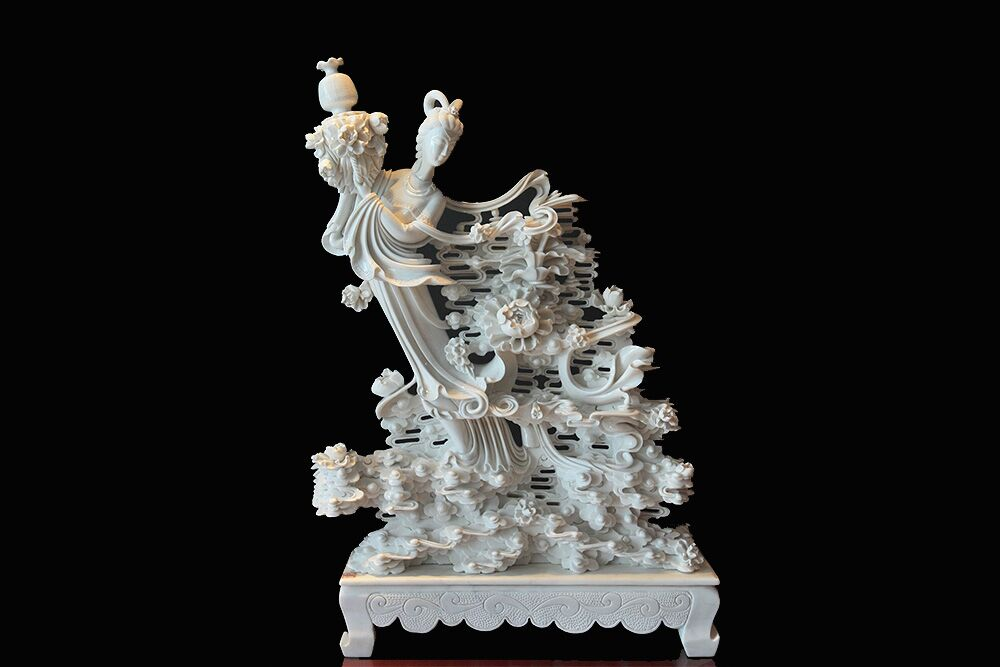

曲阳最具代表性的旅游景点，感受历史与自然的完美融合
探索曲阳深厚的历史文化底蕴和独特的民间艺术
曲阳石雕始于汉、兴于唐，以“精雕细琢、形神兼备”闻名，是中国北方石雕艺术的代表，如今已发展为集建筑装饰、工艺礼品于一体的文化产业。

曲阳历史悠久，文化底蕴深厚，境内保存着众多历史遗迹。从北岳庙的古建筑群到田庄大墓的石刻艺术，每一处都诉说着曲阳悠久的历史。
田庄大墓是唐代大型砖室墓，墓内壁画和石刻精美绝伦，反映了唐代高超的艺术水平和丰富的社会生活，是研究唐代历史文化的重要实物资料。
曲阳民间艺术形式多样，包括皮影戏、秧歌、高跷、舞龙舞狮等。这些民间艺术形式传承了数百年，至今仍然活跃在曲阳的乡村和城镇。
曲阳的传统手工艺也非常发达，除了石雕外，还有剪纸、泥塑、编织等。这些手工艺品不仅具有实用价值，更是曲阳人民智慧的结晶。